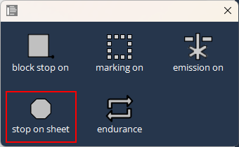
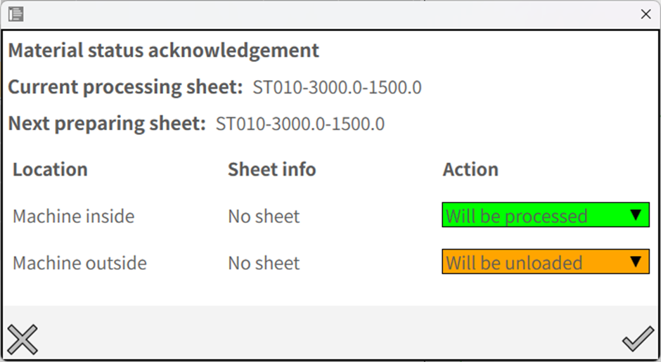

Run a production plan
As in production plan list, there could be plenty of programs be displayed. To have a clear view the current program running state, consider to add the symbols which indicate the relative state.


Program selection and Quantity change
To Select a production plan: Click on the Production plan name > The entire production package be highlighted in dark color.

To Change Quantity: Quantity only can be adjusted while Production plan is in Lock state. This is to avoid the risk of unexpected loading/unloading reactions from machine.
While adjust the Current quantity, its maximum value is “Nominal - 1”, this is to ensure that the preload sheet be finished properly.

Quantity should be stored for each production plan: There could be the case that the production plan is running but there’s a new production plan with higher priority need to be processed. In this case, the operator will abort the current production plan, and process the new production plan, in the end resume to original production plan to continue. So, it requires to have all the latest quantity status being saved for each production plan. The data be stored in IPC, and will not be cleaned even a machine reboot.
Stop after Current Sheet
Stop on Sheet button This function is to stop the production plan while the current sheet processing finished. In certain cases, the operator wants to stop the production plan and no need to continue further processing of next sheet, he can use this function as a pre-setting.
Activate this button in processing, while the current sheet being finished, the production plan will be stopped, the next sheet will not be continued to process.

In Production plan, Material acknowledgement status occurs during every start of the single program.

Endurance Mode
-
Purpose of Endurance mode is to check the following:
-
Mechanical installation reliability of the machine.
-
Gas pressure regulator.
-
Height control function.
-
If Emission ON, then activate the marking option.
-
Focus control movement.
-
Focus diameter change, etc.,
-
-
Endurance mode can be used only in Production Plan and will be running in the same pallet. (Pallet changer will be deactivated).
-
Hence, only the pkg.lst file program is supported. If need a particular LST program to be tested in Endurance mode, then convert it to .pkg.lst.